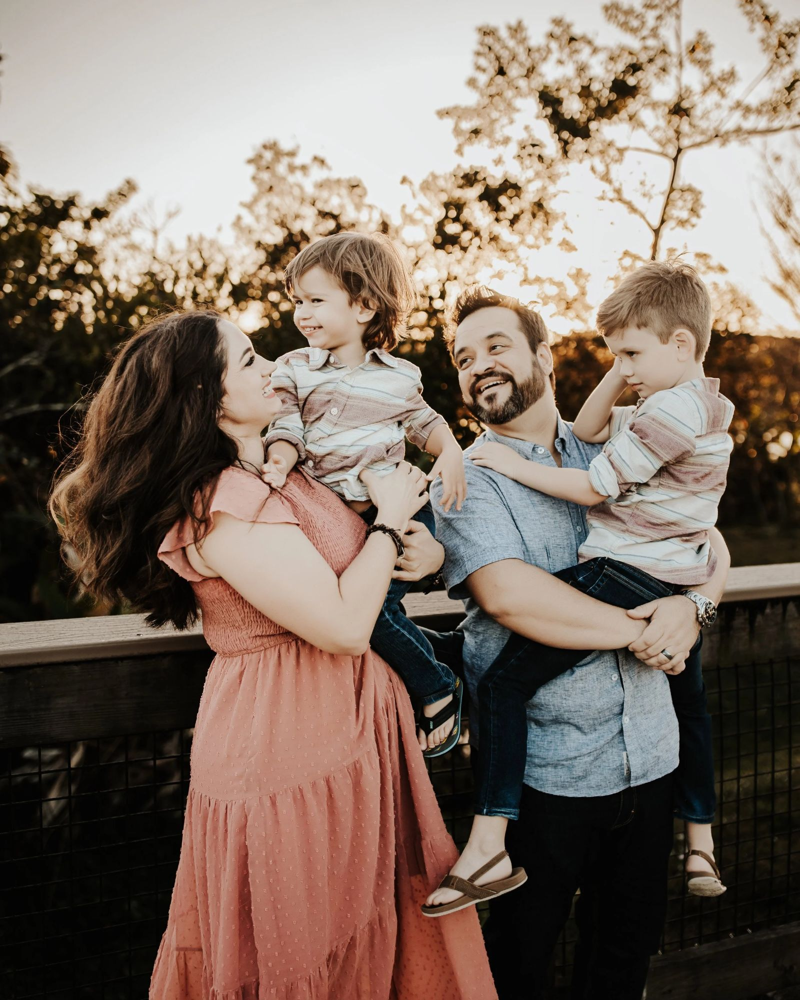

I've spent 20+ years in design — growing from studio work with Fortune 500 brands to leading product design teams at one of the world's top sales enablement platforms.
My job is to create the conditions where great design happens repeatedly — not just once.
I believe the best design leaders clear obstacles, not create them. My role is to give my team the context, resources, and psychological safety to do their best work. I advocate for their ideas, shield them from noise, and make sure credit flows to the people who earned it.
I've had the privilege of growing and mentoring design talent at Seismic — establishing clear career paths, building cultures of craft and accountability, and creating environments where both senior designers and emerging talent thrive. I measure my success by how much my team doesn't need me.
Design impact rarely comes from designers alone. I work closely with product, engineering, marketing, and executive leadership to align roadmaps, build consensus, and ensure design is a key contributor to business objectives — not just an executor of feature requests.
The problems I solve aren't just UI problems — they're organizational ones. How do we build a design process that scales? How do we embed user research earlier in the cycle? How do we make design's value legible to executives? I navigate ambiguity and conflicting priorities to drive systemic change and measurable business impact.
From running a design studio to leading product teams at enterprise scale — a consistent thread of leadership, craft, and growth.
